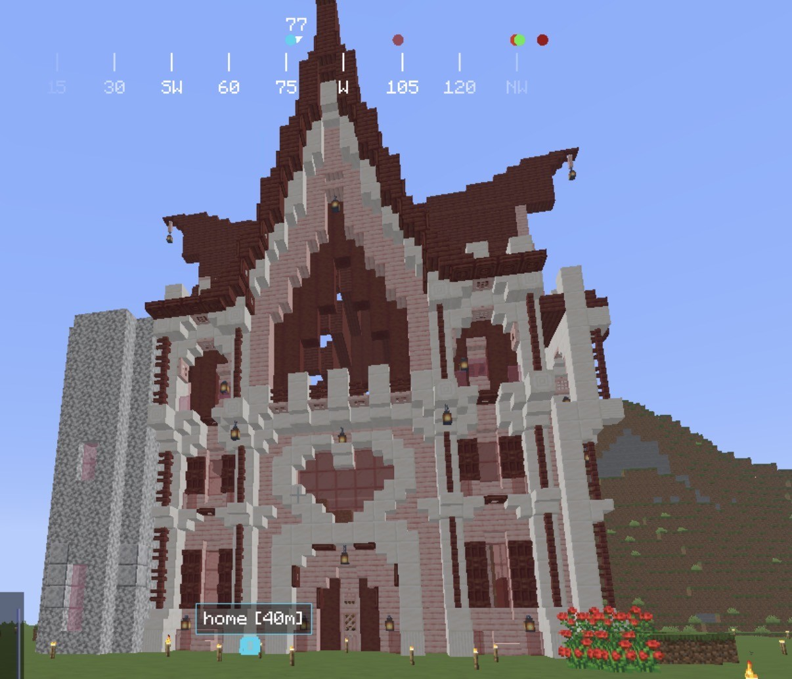

H i , I ' m M o l l y !

I've recently been playing Minecraft on Hypixel a lot. I like Bedwars or my current SMP with my friends. We just beat the dragon and looted an ancient city!

I came to NEIT for Cybersecurity & Network Engineering because of my dad. My dad has been working for Verizon as DMTS since I was born, and he's really into technology. I started playing games like Webkinz, Minecraft, GTA, and The Sims when I was 6 on his PC.
Besides games, he also taught me a lot about how computers work and inspired me to choose this path. This school's campus is also very nice, the dorms are new, and it's not too far from Taunton. Graduating early will also be nice.